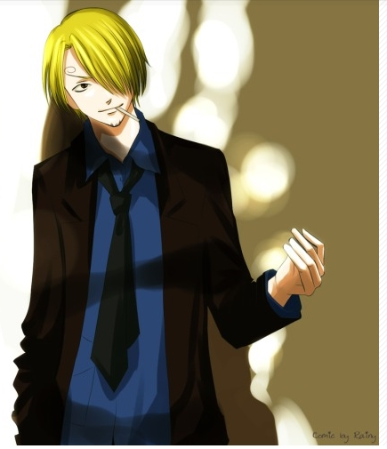
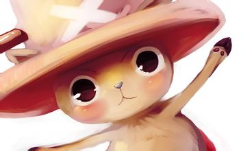

蒙奇·D·路飞

人物介绍
- 中文名：蒙奇·D·路飞
外文名：モンキー·D·ルフィ、Monkey·D·Luffy
别名：草帽小子、蒙其·D·鲁夫、莫奇·D·路飞、草帽当家的
职业：草帽海贼团船长、草帽大船团船
故乡：东海-哥雅王国-风车村
悬赏金：四亿贝利
霸气种类：霸王色、武装色、见闻色
恶魔果实：“超人系——橡胶果实” 能利用橡胶的特性将身体各部位
伸长，达到攻击和防御敌人的目的。
- 其他身份：革命军首领蒙奇·D·龙的儿子和海军英雄蒙奇·D·卡普孙
子，海贼王船上的副船长雷利的徒弟，海贼王儿子波特卡斯·D·艾
斯和革命军萨博的义弟，古代兵器“波塞冬”白星公主的引导者，而
且必定是未来的海贼王。
特点：不怕子弹（特制子弹除外[如：监狱弹]）、钝击与雷电（因
为橡胶是绝缘体），心理上不怕所有的东西（除了失去重要的人
和没肉吃），非常有正义感，善良，勇敢，一根筋、单纯，有点
没脑子，不会做饭不会剑术不会航海不会骗人（出自阿龙篇），
但是会当老大。-
弱点：路痴（索隆比路飞还路痴）、有时候脑子不太好使（尤其是
对人脸的记忆，两年后连同伴都认错）、思考太多就头疼（基本上
不思考），略呆萌（一本正经后几乎是奇怪的答案），怕饿、刃器
、怕烫、怕火、爷爷卡普的拳头（带有武装色的“爱之拳”）、怕海
水、海楼石（后两点是恶魔果实能力者共同弱点）。
罗罗诺亚·索隆

-
人物介绍
-
中文名：罗罗诺亚·索隆
外文名：ロロノア.ゾロ 、Roronoa Zoro
其他名称：海贼猎人、绿藻头
职 业：草帽海贼团剑士/草帽团三主力之一/海贼猎人
霸 气：剑术、武装色霸气、见闻色霸气
故 乡：东海-霜月村
悬赏金：3亿2000万贝里
梦 想：成为世界第一的大剑豪
-
特征：两年前头发绿色，左耳戴三只金色水滴型耳环，绿色的腹
卷，腰带上佩三把刀，左臂绑著墨绿色的头巾（戴上意味著认真
作战，战斗力剧增），胸前有数道疤痕，最大的是从肩到腰斜劈，
系鹰眼所伤。两年后左眼多了个疤且一直没有睁开过，疑似被猩
猩所伤，后为绿色的长袖大褂，爱睡觉，超级路痴（跟在别人后
面也能迷路）、讲义气、较为热血、信任船长、愿为挚友而死
（曾在恐怖船上愿以自己的人头换路飞等人的性命）目前左眼失
明与否，暂时未知。(但根据漫画669集后附带的官方资料显示，
左眼是瞎了，但还有一个可能是可以此造就一些招数)

“小贼猫”娜美

-
人物介绍
-
中文名：奈美
外文名：泥棒猫ナミ
别名：小贼猫娜美（泥棒猫ナミ，“泥棒”在日文意为“小偷”）
故乡：可可亚西村
悬赏金：1600万贝里
职业：草帽海贼团航海士、海贼、海贼专偷
武器：三截式长棍→天候棒→完全版天候棒（由乌索普所发明）→魔
法天候棒（由气象岛学者改良）
能力：偷窃、天候棒招式、拥有极高胜过海军的航海术、谈判和高超
的演技
梦想：利用自己的航海术环游世界，并画出一张亲眼所见的世界地图。
乌索普
-
人物介绍
-
中文名：乌索普
外文名：ウソップ 、Usopp 、骗人布（东立）、撒谎布（浙人美）
别名：狙击之王、GOD·乌索普
故乡：东海-西罗布村
悬赏金：2亿贝利
职业：草帽海贼团狙击手
武器：银河弹弓、兜等
梦想：成为最勇敢的海上战士
-
背景：草帽海贼团第四名成员，职位是狙击手。乌索普并没有怪物级
的实力，战斗中经常败北，不过他还是会用自己的方式尽力战斗；对
于自己更是有所要求。其父亲是四皇红发海贼团的狙击手耶稣布。 -
性格特点：乌索普平常个性怯懦，喜爱吹牛，但是对于“勇敢的海上
战士”却是非常向往，他一直向往如同父亲般的厉害身手与勇敢精神。
对于伙伴更是全力维护。
“黑足”山治

-
人物介绍
-
中文名：山治
外文名：サンジ、Sanji
别名：黑足
故乡：北海
悬赏金：1亿7700万贝利
职业：草帽海贼团厨师
能力：踢击、月步、见闻色、武装色
梦想：All Blue、透明果实
-
背景：山治最初的设定叫鸣人。因为山治的眉毛设定是卷起来的，
所以一开始山治的名字是叫鸣人的，结果因为火影忍者开始连载，
尾田迫不得已改成了山治。 -
特征：草帽海贼团三主力之一，金发，有着卷曲眉毛，顺眉（进
入新世界时露出左眼，眉毛跟右眼一样，是顺时针旋转的，都向
右边歪），下巴上有着小胡子，两年后更加明显，香烟不离口的
草帽海贼团暴力好色厨师。

托尼托尼·乔巴

-
人物介绍
-
中文名：托尼·托尼·乔巴
外文名：トニートニーチョッパー 、Tony Tony Chopper
别名：喜欢棉花糖的宠物
故乡：磁鼓王国
悬赏金：100贝利
恶魔果实：人人果实
职业：草帽海贼团船医
能力：8段变形，现能控制暴走形态需食用蓝波球
梦想：成为什么病都可以治的医生（万能药）
-
特征：蓝鼻子的驯鹿，会说人话、可以直立。平常的样子像个可
爱的小熊，经常被误认为是狸猫。想躲起来的时候总是把头藏起
来，身子还是露在外面。 很喜欢吃棉花糖。 -
性格：天真、可爱、傲娇（受到夸赞时嘴里说不会高兴，可是做
出来的动作很快乐的样子）、善良、容易受骗；在把自己藏起来
的时候会藏在反方向（即身体在外）,常常抱住索隆的头，把索
隆憋得半死。 -
弱点：不擅于隐藏自己的情绪、不会游泳、海楼石、海水、霸气（
后四点是能力者的共同弱点）。


妮可·罗宾
-
人物介绍
-
中文名：“恶魔之子”妮可·罗宾（尼可·鲁宾）
外文名：ニコ·ロビン、Nico Robin
别名：恶魔之子、革命之灯
故乡：西海．考古之岛奥哈拉
恶魔果实：超人系花花果实
能 力： 考古学、翻译、贿赂
职业：草帽海贼团考古学家
悬赏金：1亿3000万贝利
梦想：寻找历史真相
-
特征：草帽海贼团的考古学家，初登场于漫画单行本第13集，原
为地下暗杀组织巴洛克工作社的副社长兼最高司令官，代号为Mi
ss.all sunday。 -
人物战斗：罗宾是超人系“花花果实”能力者，能让身体的任何部
位像开花一样长在视线范围内的任何有形体的事物上并作出攻击
或其他用途。此用途在偷袭方面相当具有效果。攻击招式数字名
称是西班牙语，“フルール”（花开）则是法语“花”的意思，战斗
时，周围会有花瓣在飞舞。
“改造人”弗兰奇

-
人物介绍
-
中文名：弗兰奇、卡特·弗兰姆
外文名：FRANKY、フランキー
别名：铁人
故乡：南海
原居住地：水之七岛
职业：草帽海贼团船匠
悬赏金：9400万贝利
称号：“改造人”弗兰奇、铁人弗兰奇、弗兰奇将军
武器：全身都是武器！（除背部外，因为改造时弗兰奇的手没办
法伸到背部，因此不能对背后加以改装）。
梦想：本来是制造出梦想之船，但万里阳光号完成后，梦想变成
是看到自己制造的船到达世界尽头。
-
性格特征：个性相当热血重情义，容易因受到感动而大哭甚至拿
出吉他来弹奏，被罗宾称为很有趣的男人，总是穿着一条泳裤而
被当成变态。对路飞直称“草帽”，索隆“肚兜”，香吉士“卷卷眉”，
乌索普“长鼻子”，娜美“大姐头”，乔巴“鹿猩猩”，对罗宾则直称
“妮可·罗宾”。但在新世界篇中，弗兰奇已经改口直称伙伴的名字。